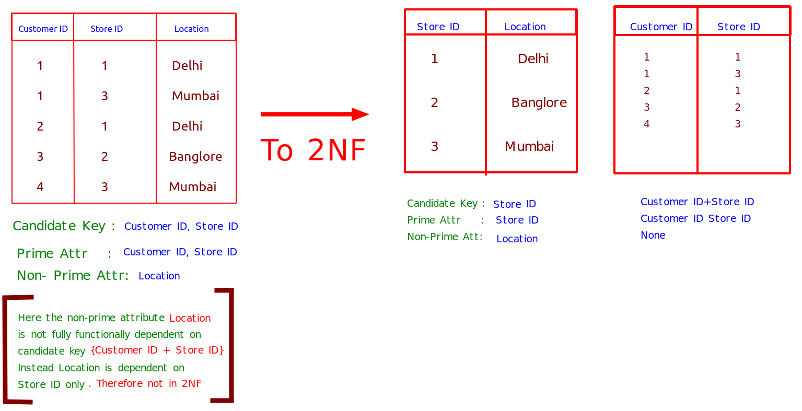

2NF
Second Normal Form
Rule :
⇒ Table must be present in 1NF.
⇒ All the non prime attributes(attributes which are not participating in formation of candidate key) should be fully functional dependent on candidate key. OR There should be no partial dependency(When a part of candidate key determine another non prime attribute.) in the relation.

Que: Identify relation in 2NF or Not?
Given : R(A,B,C,D,E,F)
FD {C→F, E→A, EC→D, A→B }
Ans
Step 1: Let's find candidate key.
So EC needs to be in candidate key as it's not in right side of any of the FDs
EC+ = ECFADB //hence EC is candidate key
None of the FD has E or C on it's right side so we can't substitue any value therefore
Only EC is candidate key
CK = {EC}
Step 2: Prime Attribute = {E,C}
Step 3: Non Prime Attribute = {A, B, D, F}
Step 4: Check for partial dependency
Since in our CK {EC} , C→F where F is non prime attribute therefore partial dependency exists.
And Relation is not in 2NF.
Hack : For partial dependency
FD ka{LHS should be proper subset of CK && RHS should be a non Prime attribute.}
For {EC} : proper subset {E} || {C}
subset {EC}